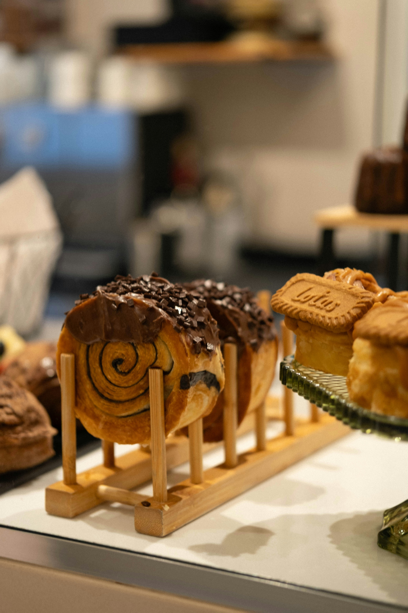

01
Artisan breads
Characterful loaves selected for quality-led menus, counters and retail shelves.
FROM ITALY · FOR THE UK
Phoenix80 is developing a distinctive range of authentic Italian breads and bakery specialities for cafés, restaurants, hotels, delis and independent retailers across the UK.
01 Authentic Italian origin
02 Trade-focused selection
03 Personal, responsive service
OUR STORY
Phoenix80 began with a simple ambition: to help British food businesses discover bakery products with the warmth, flavour and character of Italy.
Our family connection to Italian bakery production gives us a close appreciation of the people, techniques and standards behind great bread. We are now shaping a focused UK trade offer built around authenticity, clear communication and lasting business relationships.
See who we are building forTHE COLLECTION
Our opening range is being carefully developed. Final products, formats, availability and trade specifications will be shared in the Phoenix80 catalogue.
Characterful loaves selected for quality-led menus, counters and retail shelves.

Distinctive Italian-inspired products designed to bring variety and interest to your offer.
Temporary editorial photography: Lee Seunghyub and Caroline Badran via Unsplash. Supplier product photography will replace these images as the range is confirmed.
BUILT FOR FOOD BUSINESSES
Phoenix80 is based in Phoenix80 will be based in Milton Keynes and is developing supply relationships for UK food-service and retail buyers. and is developing supply relationships for UK food-service and retail buyers.
Products that can add character to breakfast, lunch and grab-and-go menus.
Versatile bakery options for service, sharing, events and hospitality.
Authentic products with a strong story for carefully curated shelves and counters.
Consistent formats suited to professional planning and varied customer occasions.
THE PHOENIX80 APPROACH
We want trade buying to feel clear, personal and practical from the outset.
Share your location, customer type and the products you are looking for.
We will share relevant product information as the catalogue becomes available.
Quantities, formats, availability and delivery requirements will be agreed clearly.
FREQUENTLY ASKED
We are currently developing the opening range and UK supply arrangements. Trade enquiries will open as soon as the catalogue and commercial details are ready.
Phoenix80 is based in Milton Keynes, United Kingdom, with broader UK trade coverage planned. Delivery areas will be confirmed with each buyer.
Product formats, storage requirements and preparation guidance will be stated clearly in the trade catalogue once the range is confirmed.
Sample availability will depend on the product and launch arrangements. Interested businesses can register their details once the trade mailbox opens.
TRADE ENQUIRIES
For product information, trade enquiries or catalogue requests, contact Phoenix80 using the details below.